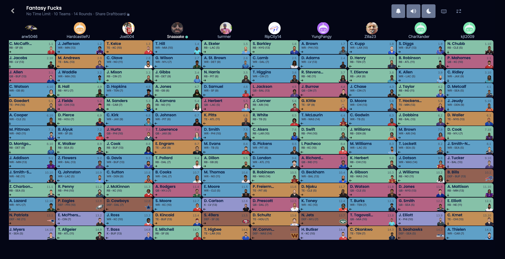
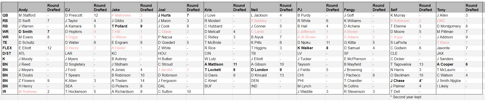

2024-2025 Draft
August 24, 2024 - 4:00pm (ish) Airbnb Location: 2726 Pioneer Way E, Tacoma, WA 98404 Airbnb Cost: $408.46
Draft Order Drawing
July 24, 2024 - 8:00pm
ADP Determination for Undrafted Players
August 17, 2024 - 4:00pm (ish)
^^^^^^ Finalized ADP From August 17
Keepers
For a reminder on how keepers work, see this page. This year, we have adopted new rules for players who were undrafted in the previous year.
Players kept in the 2023-2024 draft
| Fucker | Player | Round Drafted in 2023 | Cost if kept in 2024 |
|---|---|---|---|
| Pangy | - | - | - |
| Seif | Ja’Marr Chase | 4th | 1st - second year keep, originally drafted in 7th |
| Tony | Amari Cooper | 6th | 4th |
| Joel | Jalen Hurts | 7th | 5th |
| Andy | DeVonta Smith | 7th | 5th |
| PJ | Ken Walker | 8th | 6th |
| CJ | Tyler Lockett | 8th | 6th |
| Jake | Tony Pollard | 9th | 7th |
| Neil | Drake London | 9th | 7th |
| Kris | Alexander Mattison | 11th | 9th |
2023-2024 Draft Results

2023 - 2024 Final Rosters

-
History of the last few drafts/keepers
Players kept in the 2023-2024 Draft:
Tony - Amari Cooper - 6th
PJ - Ken Walker - 8th
Joel - Jalen Hurts - 7th
Jake - Tony Pollard - 9th
Andy - DeVonta Smith - 7th
Neil - Drake London - 9th
Pangy - No One
Seif - Ja’Marr Chase - 4th (2nd-year keep)
CJ - Tyler Lockett - 8th
Kris - Alexander Mattison - 11th
Players kept in the 2022-2023 Draft:
Tony - Mark Andrews 4th Round
Jake - DeAndre Swift 3rd Round (2nd-year keep)
PJizzle - Michael Thomas 6th Round
seifzilla - Jamarr Chase 6th Round
RipCity - Javonte Williams 5th Round
Joel - Dallas Goedert 12th Round
DeFi_Mon$ter - Tee Higgins 5th Round
an_d - Justin Herbert 6th Round
KJT09 or BROWNS?? - Marquese Brown 10th Round
PangREEE - Elijah Mitchell 7th Round
Players kept in the 2021-2022 Draft:
Jake - Derrick Henry - 3rd (2nd-year keep)
PJ - DK Metcalf - 9th (2nd-year keep)
Kris - Lamar Jackson - 9th (2nd-year keep)
Ian - Terry McLaurin - 4th
CJ - Bradin Cooks - 8th
Seif - Antonio Gibson - 10th
Joel - Dionte Johnson - 7th
Neil - JK Dobbins - 7th
Andy - D’Andre Swift - 5th
Tony - Calvin Ridley - 4th